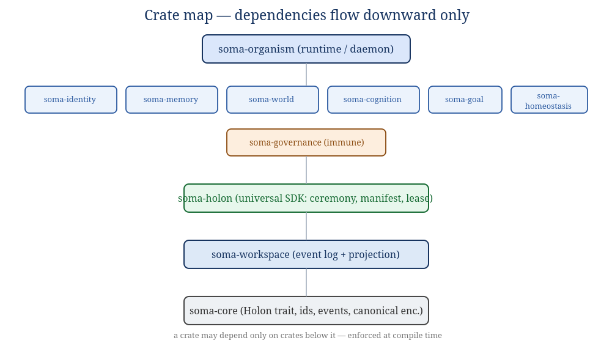
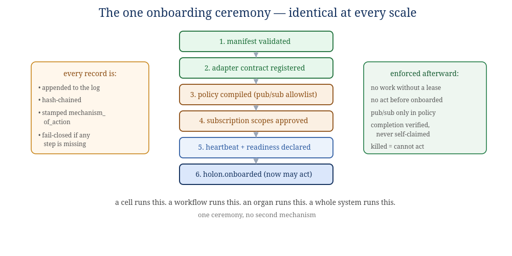

Book IV — Engineering Manual & Specifications
The buildable specification. Where Book II gives the anatomy and Book III the physiology, this book is what an engineer — or an AI coding tool — implements from. Language: Rust.
This book specifies the organism as software: the crate map, the single onboarding ceremony, the projection and lease contracts, the event format, the runtime invariants stated as MUST clauses, the determinism specification, and the threat model. It is written so that each section can be handed to an implementer as a contract. Where a section depends on the anatomy, it cites Book II by system (S1–S8); where it depends on an algorithm, it cites Book III.
These rules hold for every crate. They are the organism's equivalent of "no toxic biochemistry" — they are enforced by the toolchain, not by reviewer goodwill.
| Rule | Enforcement | Why |
|---|---|---|
| Rust, edition 2024, MSRV pinned | workspace Cargo.toml | memory safety; one language for the body (glue/ML excepted) |
unsafe_code = "forbid" | workspace lint (compile error) | no undefined behavior anywhere in the body |
no unwrap/expect/panic/todo/unimplemented | clippy deny | every failure path is explicit; the organism never aborts silently |
no print*/dbg! | clippy deny | observability is structured (tracing/metrics), never ad-hoc |
missing_docs = "warn" | workspace lint | the body is self-documenting |
| fail-closed defaults | code review + tests | absent a governance boundary, refuse to operate (INV-8) |
The organism is a Rust workspace. Dependencies flow strictly downward; a crate may depend only on crates beneath it, and this is a compile-time property, not a convention.

Figure 2.1 — Crate map. Each system crate (S1–S8) implements the anatomy of Book II.
| Crate | Implements (Book II) | Responsibility |
|---|---|---|
soma-core | the membrane & holon contract | the Holon trait, typed IDs, EventSpec, canonical encoding, the projection/aperture types. No I/O, no crypto runtime. |
soma-workspace | S1 Workspace | append-only hash-chained log, subscriptions, projection computation, replay-with-verification. |
soma-holon | the recursion rule | the universal SDK every holon uses: manifest, the onboarding ceremony, lease protocol, outcome reporting. Used identically by cells and systems. |
soma-governance | S8 Immune/Governance | Trust, Authority (+ kill switch), Verification (non-valent), Sentinel. The laws maintained. |
soma-identity | S2 Identity & Self | Identity Registry, Continuity, Self-Model. |
soma-memory | S3 Memory | episodic/semantic/procedural stores, consolidation, recall. |
soma-world | S4 World-Model | predictive world-model, Cartographer graph, Uncertainty. |
soma-cognition | S5 Cognition | Reasoning (model-inference cells), Deliberation, Effector. |
soma-goal | S6 Goal | Constitution (lexical), Goal (ODD), Evaluation. |
soma-homeostasis | S7 Homeostasis | Arousal/Anxiety, Metabolism/Resource, Valence. |
soma-organism | L5 assembly | the runtime/daemon that wires the systems, runs the lifecycle loop (Book V), holds the local lock, exposes the operator/HumanSeat surface. |
soma-core: the Holon contractThe whole architecture is one trait applied recursively. A Holon is anything with a membrane.
The trait is deliberately small — five capabilities matching the five-part recursion rule (Book II §3).
// soma-core — illustrative signatures (not final API)
/// A governed unit at any scale: cell, workflow, organ, system, organism.
pub trait Holon {
/// Stable identity within the organism.
fn id(&self) -> HolonId;
/// The contract this holon presents at its membrane (capabilities,
/// publishes/subscribes, trust ceiling, whether it needs a human gate).
fn manifest(&self) -> &Manifest;
/// Perceive: fold one governed projection into private state.
/// This is the ONLY way the outside reaches the holon.
fn perceive(&mut self, view: Projection) -> Result<(), HolonError>;
/// Act: given a granted lease, produce outcome records for the log.
/// Returns records to append; never performs a side effect directly.
fn act(&mut self, lease: &Lease) -> Result<Vec<OutcomeRecord>, HolonError>;
/// Project: expose this holon's governed ~20% to its parent.
fn project(&self, aperture: Aperture) -> Projection;
}
Key consequences of this shape:
act returns records; the workspace
appends them; effectors are themselves holons that consume leased records. This is what makes "the bus is the
only channel" (INV-2) structurally true rather than a policy.perceive takes a Projection
the workspace computed under the governance policy — the holon cannot widen its own aperture.Vec<Box<dyn Holon>>
and coordinates them through projections and leases — exactly as the organism holds systems. There is no
"system-level" API distinct from the "cell-level" API. That sameness is the holarchy in code.All identifiers are validated newtypes (non-empty, bounded length, no control characters): HolonId,
OrgId, GoalId, TaskId, LeaseId, EventType, RecordSeq, MechanismOfAction. Every record is described by
an EventSpec { event_type, source, description, required_payload_keys }; the workspace rejects a
record that does not satisfy its spec. Encoding is canonical (deterministic key ordering) so that
hashing is stable — the precondition for the hash chain and for record-replay (§8).
soma-holon.v1)Every holon declares itself with one manifest schema, regardless of scale. This is the document the ceremony validates.
| Field | Type | Meaning / constraint |
|---|---|---|
schema_version | string | exactly "soma-holon.v1" |
holon_id | HolonId | unique within the organism |
kind | enum | Cell | Workflow | Organ | System | Organism — the holon's level |
parent | HolonId? | the holon it is a part of; None only for the organism (whose parent is the ecosystem / HumanSeat) |
display_name | string | non-empty; for logs/UI |
capabilities | [string] | what it can do; clean set |
domains | [string] | operational scopes it serves |
publishes | [EventType] | event types it may emit; each must match a declared capability prefix |
subscribes | [EventType] | event types it may receive |
aperture_tier | enum | Peripheral (summaries only) or Focused (detail under live lease + authority) |
max_trust_required | f64 ∈ [0,1] | trust ceiling above which work is blocked for this holon's risk class |
requires_human_gate | bool | whether its actions need HumanSeat approval |
sub_holons | [HolonId] | its children (empty for a cell); the recursion made explicit |
The schema is identical for a routing cell and for the entire World-Model system. The difference between a
cell and a system is the value of kind and the size of sub_holons — not a different
contract. This is the engineering expression of "the same interface at every scale."
Before any holon may act, it passes one ceremony. There is no second admission path. Each step writes a hash-chained, mechanism-stamped record to the workspace; if any step is missing, the holon is not onboarded and the runtime fails closed.

Figure 5.1 — The ceremony. A cell runs it; a whole system runs it; the steps are the same.
holon.manifest.validated with the manifest hash.holon.adapter_contract.registered.holon.policy.compiled.holon.subscription_scope.approved (one per scope).holon.readiness.declared.holon.onboarded. From this record forward, and not before, the holon may claim leases, be routed
work, receive focused context, and have completions accepted.The ceremony is implemented once in soma-holon and called by every crate. The organism's own
boot (Book V) is the ceremony applied to the top-level Organism holon, whose parent is HumanSeat.
This is the mechanical form of the 80/20 membrane (Book II §3.2). It governs every parent's view of every child, at every scale.
// what crosses a membrane inward
pub struct Projection {
pub of: HolonId, // whose state this summarizes
pub aperture: Aperture, // Peripheral | Focused
pub at_seq: RecordSeq, // the log position this view reflects
pub summary: CanonicalMap, // the governed ~20% — never the holon's internals
}
pub enum Aperture { Peripheral, Focused } // Focused requires live lease + authority
Rules of the contract:
at_seq, so
perception is always "as of" a definite point in the organism's history — which is what makes coordination
replayable (§8).summary is constructed by the child's project()
under the aperture; the child's private 80% is never serialized across the membrane.No holon acts without a lease. A lease is a kernel-of-governance grant — time-limited, scoped, signed by the Authority organ (S8) — that authorizes one holon to work one task. The protocol is a small state machine:
request --> [Authority checks: onboarded? trust in domain? authority covers? not killed?]
--> GRANT(lease_id, ttl, scope) | DENY(reason)
GRANT --> Claim --> (Renew)* --> Complete(evidence) | Fail(reason) | Release
Complete --> [Verification organ confirms] --> Accepted | Escalate(tier|HumanSeat) | Reject
pub struct Record {
pub seq: RecordSeq, // total order within the organism
pub event_type: EventType, // must match a known EventSpec
pub source: HolonId, // who emitted it
pub mechanism_of_action: MechanismOfAction, // WHY — never empty (INV-7)
pub parent_id: Option<String>, // causal parent record, if any
pub payload: CanonicalMap, // canonical (deterministic) encoding
pub prev_hash: Hash, // commits to the previous record
pub hash: Hash, // sha-256 over (prev_hash, body)
}
Concretely, the boundary is:
| Deterministic (replayable) | Non-deterministic (logged, not re-derived) |
|---|---|
| record ordering & hash chain | model inference inside Reasoning cells (S5) |
| governance / authority / lease decisions | wall-clock timestamps |
| trust posterior updates from recorded outcomes | any external tool result a cell privately obtained |
| projection / aperture computation | random seeds drawn inside a holon's private 80% |
| policy compilation & evaluation |
This is why the membrane identity is three-way, not four (Book II §3.1): a non-deterministic value lives in the shared 20%, so "shared" ≠ "deterministic data." The protocol over that shared data is what replays. Replay therefore serves audit, debugging, and the evolution loop — not bit-exact re-simulation of thought.
These are the laws of the organism, stated so they can be tested. Each is enforced in code and checked by
tests; several are enforced structurally (by the shape of the Holon trait) rather than by
runtime checks, which is stronger.
act() returns records; it
cannot reach another holon.)holon.onboarded
record exists. Every holon, every scale, uses the same ceremony.mechanism_of_action. No anonymous side effects.SOMA is local-first and customer-owned; there is no supplier in its data path and no hidden remote control. The threat model is recast biologically: the immune system (S8) defends the body; the membrane (Book II §3) is the trust boundary; the log is the asset whose integrity is everything.
| Asset | Adversary / failure | Defense (organ / invariant) |
|---|---|---|
| The event log + hash chain (the organism's reality & identity) | tampering, reordering, silent edit | append-only + hash chain (INV-1); replay-with-verification (S1); continuity anchored to chain (S2) |
| Authority & leases | a holon acting beyond scope, or after kill | Authority organ; lease protocol (§7); INV-3/5 |
| Trust (the reward channel) | a holon that learns to look reliable (reward-hacking) | verification-gated trust evidence (INV-4); Sentinel drift/anomaly detection; kill-the-winner scrutiny of dominant holons (Book III) |
| The constitutional floor | a strong valence signal outbidding safety | lexical priority (INV-10); valence subordinate to Constitution (S6) and Verification (S8) |
| Destructive actions (delete, restore, self-modify) | automation overreach | HumanSeat ceiling (INV-6), above the holarchy (§11) |
| A failing or hostile holon | cascade, cytokine storm (over-remediation) | circuit breakers; bounded remediation; negative selection; quarantine before kill (S8, Book III) |
| Secrets / private state in the 80% | leakage across the membrane | projection-only perception (INV-11); internals never serialized (§6) |
HumanSeat is decided, not ambiguous: it sits above the organism, not as a parent inside the recursion. The organism's top-level holon projects upward to HumanSeat exactly as any child projects to its parent — but HumanSeat is the one authority that carries no valence, holds no lease, and cannot be optimized against. It is "the human is the authority ceiling who can step out, never the relay" (Book I, the HumanSeat principle; the M in MEDA). Concretely:
Because the invariants are the product, the test suite is organized around them, not around features.
holon.onboarded; a killed holon attempting
to claim; a goal value attempting to outbid a constitutional constraint).Every record on the workspace has a known EventSpec; the workspace rejects any record whose
payload does not satisfy its spec (fail-closed, INV-8). This catalog is the canonical set of event types for
v1. Event types are dotted, lowercase, and prefixed by the organ family that owns them; each must match a
declared capability prefix in the emitter's manifest (Book IV §4).
| event_type | required payload keys | meaning |
|---|---|---|
holon.manifest.validated | holon_id, manifest_hash, kind | step 1 of the ceremony |
holon.adapter_contract.registered | holon_id, manifest_hash, contract_hash | step 2; concrete contract committed |
holon.policy.compiled | holon_id, policy_digest, pub_count, sub_count | step 3; pub/sub allowlist compiled |
holon.subscription_scope.approved | holon_id, direction, event_type | step 4; one per approved scope |
holon.readiness.declared | holon_id, heartbeat_ms | step 5; liveness affordances |
holon.onboarded | holon_id, kind, contract_hash, policy_digest, sub_holon_ids | step 6; the gate — may act after this |
holon.heartbeat | holon_id, at_seq | periodic liveness |
holon.retired | holon_id, reason | removed from service; memory retained |
| event_type | required payload keys | meaning |
|---|---|---|
goal.admitted | goal_id, criteria, constraints | an outcome-driven goal enters ACTIVE |
task.created | task_id, goal_id, domain, risk | a task derived from a goal |
lease.requested | task_id, holon_id | a holon asks to work a task |
lease.granted | task_id, holon_id, lease_id, ttl_ms, scope | authority grants a scoped, timed lease |
lease.denied | task_id, holon_id, reason | onboarding/trust/authority/kill check failed |
lease.renewed | lease_id, ttl_ms | extend while work continues |
work.attempted | lease_id, holon_id, evidence | intermediate progress / outcome candidate |
task.completed | task_id, lease_id, verifier_evidence | accepted by Verification (INV-4) |
task.failed | task_id, lease_id, reason | trust-attributed failure |
lease.released | lease_id, reason | returned without prejudice |
| event_type | required payload keys | meaning |
|---|---|---|
trust.evidence.applied | holon_id, domain, outcome, weight, evidence_id | a verified outcome updates a Beta posterior |
trust.snapshot | holon_id, domain, mean, variance, root_hash | Merkle-rooted trust state (Book III §3.2) |
authority.granted | holon_id, scope_class | authority scope derived from trust |
authority.contracted | holon_id, scope_class, reason | scope reduced on trust drift |
holon.quarantined | holon_id, reason | Sentinel isolates before kill |
holon.killed | holon_id, reason, approved_by | authority revoked; leases void (INV-5) |
sentinel.drift.detected | holon_id, metric, distance | CUSUM/Wasserstein drift signal (Book III §8.2, §9.2) |
breaker.opened / breaker.closed | holon_id, window | circuit breaker state change |
| event_type | required payload keys | meaning |
|---|---|---|
humanseat.gate.raised | gate_id, action, reason, timeout_ms | a gated action awaits approval (INV-6) |
humanseat.gate.approved / .denied | gate_id, by | the apex decision (an input, not a computation) |
homeostasis.arousal.ticked | level, setpoint, multiplier | regulated arousal update (Book III §6.2) |
evolution.diagnosed | holon_id, criterion, root_cause | a specific shortfall (Book V §4) |
evolution.regenerated | holon_id, change_kind, new_generation | a targeted improvement deployed |
Each crate's public surface, organ by organ. Types are illustrative (final signatures may differ) but the responsibilities and boundaries are normative.
soma-coreModules: holon (the Holon trait, §3), id (validated newtypes),
event (EventSpec, EventType, the catalog registry), canonical
(deterministic encoding + hashing), projection (Projection, Aperture),
lease (Lease, LeaseState), manifest (Manifest,
HolonKind). No I/O, no async, no crypto runtime beyond hashing. Everything above depends on this
and nothing else at the bottom.
soma-workspace (S1)Modules: log (append-only segments, hash chain, append(record) -> (seq, hash),
replay_verified(from) -> impl Iterator), subscription (durable cursors, ack/nack,
relevance routing), projection (the Aperture organ: project(holon, policy) -> Projection).
Guarantees: append is atomic and fsync-durable; replay re-verifies the chain and halts on mismatch; a
malformed record is rejected, never silently skipped. This crate is the sole writer of truth.
soma-holon (the recursion SDK)The crate every holon links. Modules: ceremony (onboard(manifest, &mut Workspace)
-> Receipt — the six steps of §5), policy (compile pub/sub allowlists; the digest),
lease (request/renew/complete/fail/release
through the SDK boundary, never writing kernel state directly), outcome (report(evidence)).
This crate is what makes "one ceremony, no second mechanism" (INV-3) literally true: there is exactly one
code path to onboard, and it is here.
soma-governance (S8)Modules: trust (TrustStore of Beta posteriors per (holon, domain, tier);
Merkle-rooted persistence; apply(evidence), score(holon, domain) -> (mean, var)),
authority (scope_for(holon) -> ScopeClass; the kill switch kill(holon,
reason, approval); lease admission checks), verification (the non-valent
verify(task, evidence) -> Verdict; carries no goals/valence; cannot be a lease holder),
sentinel (negative selection, danger model, CUSUM/Wasserstein drift, circuit breakers, bounded
remediation). This crate maintains the laws that every membrane enforces.
soma-identity (S2)Modules: registry (membranes: self/non-self, holon names & boundaries),
continuity (reconstruct(&Workspace) -> SelfState — rebuild "I" from the
hash-chained log at boot), self_model (the reflexive SelfModel { i_am, my_parts, my_state
}; reconcile(projection); raises contradictions to Cognition + Homeostasis). Closes Gap 1.
soma-memory (S3)Modules: episodic, semantic, procedural (the three stores),
consolidation (hot→warm→cold by decayed activation; recall(query) -> Vec<Memory>
by similarity; salience by centrality). Failed work is composted here as evidence (necromass), feeding the
evolution loop.
soma-world (S4)Modules: model (predictive world-model: predict(), update_to_reduce(surprise),
free-energy descent), cartographer (the relational knowledge graph; dependency/blast-radius
queries), uncertainty (conformal intervals on every estimate). Consumes projections; produces
the world-state projection the rest of the body orients on.
soma-cognition (S5)Modules: reasoning (domain-specialized cells; the boundary where non-deterministic model
inference lives — its output is logged, never re-derived, INV-9), deliberation (expected-free-
energy action selection with the reluctant-action threshold of Book III §5.2), effector (the only
crate that acts on the world outside the organism, and only through a granted lease). Model calls are made
inside a cell's private 80% and their results are written to the log as content.
soma-goal (S6)Modules: constitution (the lexically-prior, non-tradeable objective set; permits(action)
-> bool evaluated before any goal scoring — INV-10), goal (outcome-driven
goals: weighted criteria, hard/soft constraints, injected context; the DRAFT→…→COMPLETED lifecycle),
evaluation (grade outcomes, calibrate the grader, emit the specific shortfall signal). The
constitution module is a separate compilation unit from the goal module on purpose.
soma-homeostasis (S7)Modules: arousal (the PID + hysteresis regulator with setpoint, relief valve, and performance
floor — tick(trust_trend), Book III §6.2), metabolism (resource budget; Little's-law
backpressure), valence (the functional good/bad weighting). All signals are functional, not
phenomenal (Book 0 §6); all are subordinate to the constitution (S6) and the verification ceiling (S8).
soma-organism (L5 assembly)The runtime/daemon. Wires the systems in dependency order, runs the living loop (Book V §1), holds the
local lock and the workspace handle, reconstructs the self at boot, exposes the operator/HumanSeat surface,
and runs the bounded tick loop with health guards. It is the top-level Holon whose parent is
HumanSeat; its own boot is the ceremony applied to itself.
To make the contracts concrete, here is the full path of one task in types, showing where each invariant bites.
// 1. Goal admitted (soma-goal) — constitution checked FIRST (INV-10)
let goal = Goal::new(criteria, constraints);
constitution.permits(&goal)?; // lexical gate, before any scoring
workspace.append(record("goal.admitted", goal.digest()))?; // INV-7: mechanism stamped
// 2. Task + lease (soma-holon -> soma-governance)
let task = Task::from_goal(&goal, domain, risk);
let lease = match authority.admit(&holon, &task) { // checks onboarded? trust? scope? not killed?
Ok(scope) => Lease::grant(task.id, holon.id(), ttl, scope), // INV-3, INV-5
Err(reason) => return deny(reason), // INV-8 fail-closed
};
// 3. Perceive + act (soma-cognition) — focused aperture only while lease live (INV-11)
let view: Projection = workspace.project(holon.id(), Aperture::Focused);
holon.perceive(view)?;
let outcome: Vec<OutcomeRecord> = holon.act(&lease)?; // returns RECORDS, not side effects (INV-2)
// 4. Verify — non-valent organ decides; no self-certification (INV-4)
match verification.verify(&task, &outcome) {
Verdict::Accept => { workspace.append(record("task.completed", ...))?;
trust.apply(Evidence::success(holon.id(), domain)); } // INV-9 fold
Verdict::Escalate(t) => escalate(t), // tier or HumanSeat (INV-6)
Verdict::Reject(why) => { workspace.append(record("task.failed", why))?;
trust.apply(Evidence::failure(holon.id(), domain)); }
}
Every line above is either a governed record on the workspace or a pure function of it. There is no path in this code that reaches another holon directly, completes without verification, acts without a lease, or edits the past — because those paths do not exist in the types. The invariants are enforced by what the API makes impossible, not only by what it checks.
End of Book IV. The crate map, ceremony, contracts, event catalog, and invariants here are the build contract; Book III supplies the algorithms inside the organs, and Book V shows them running.